Second-hand luxury fashion marketplace
I worked 4+ years on Vestiaire Collective, a marketplace with 20M active users.
Collaborated with 2 product squads (Engagement & CRM, Seller) to improve the current user experience within the scopes, do user interviews and testing, explore and design new feature opportunities, help with A/B test analysis.
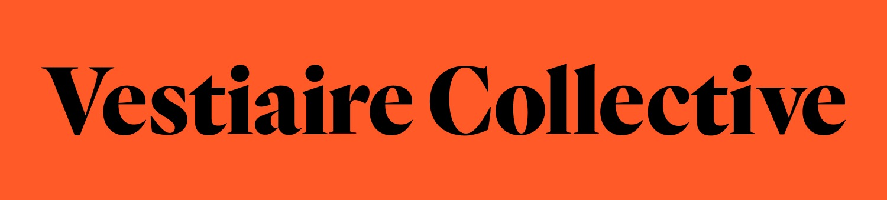
Smart Listing: a faster, easier listing experience for sellers
Helping sellers create listings faster by using their photos to pre-fill the listing, while keeping them in control of the final information.
- Role
- Product Designer
- Team
- Big squad of 1 PM, 1 EM, 1 Data, 2 devs per platform, 4 backends
- Timeline
- 2-3 months to launch, followed by 3 months of iteration
- Platform
- iOS, Android and Web
- Scope
- Discovery, UX strategy, interaction design, prototyping, testing, launch and post-launch improvements
The public version leaves out the discovery numbers, the competitor benchmark, the decision rationale and the exact post-launch results.
Context
Current experience
Creating a listing required sellers to move through a long, multi-step experience and manually enter all the information about their item. The process remains crucial for our marketplace supply quality and item discoverability, but for sellers it remains repetitive and hard to correct when something is wrong.
At the same time, sellers had already prepared their photos before entering the listing flow. This created an opportunity to explore whether photos could become the starting point for a faster, more assisted experience.
How might we reduce the effort it takes for sellers to create a listing?
The opportunityDiscovery
The discovery combined existing user research, seller feedback, quantitative listing data, a UX audit of the current flow and a benchmark of competitor listing experiences.
The research highlighted recurring friction around the length of the listing process, finding the right category or model, writing descriptions, understanding pricing and correcting information after submission.
The process felt long and complex, especially when sellers had to complete many fields manually.
Taxonomy and model selection did not always reflect how sellers described their items.
Sellers needed more flexibility to review and correct their information.
Incomplete descriptions with limited support and missing details could reduce buyer confidence.
Rigid flow, with too many clicks and an outdated UX.
Out of scope
The discovery also surfaced several pain points that were important to sellers but fell outside the scope of this revamp. These were kept in the roadmap or assigned to the relevant teams.
Sellers still couldn't edit a listing once submitted. This remained on the roadmap, with the added consideration of the recropping and revalidation costs triggered by changes.
Some sellers felt recommended prices were too low. This was linked to the existing pricing algorithm and therefore remained outside the scope of the listing experience.
Sellers reported long validation times and limited clarity around rejection reasons. These issues were primarily related to curation operations and were therefore addressed separately by the OPS team.
The current taxonomy remains unchanged for now due to its complexity, but it remains an area for future improvement.
How might we use AI to reduce the effort of creating a listing without taking control away from the seller?
The challenge was not simply to add AI to the existing form. It was to create an experience that balanced speed, accuracy, clarity and seller control.
Defining the experience
The new experience was structured around a photo-first flow.
- 1Photo selectionPhotos became the starting point of the experience instead of the final step of a form.
- 2AI analysisThe system prepares information such as category, brand, model, colour, material and description.
- 3Recap and editThe seller reviews everything in one place and edits anything the AI did not get right.
- 4PublishThe listing goes live once the seller confirms the information.
The AI could help prepare information such as category, brand, model, colour, material and description. The seller would still review and edit the information before publishing.
Design principles
-
Start with photos
Photos became the starting point of the experience instead of the final step of a form.
-
Let AI do the tedious work
The system could analyse the photos and prepare information that sellers previously had to enter manually.
-
Keep the seller in control
AI-generated values were presented as information to review and edit, not as irreversible decisions.
-
Design for uncertainty
When the AI could not infer mandatory information, the seller should be able to complete the missing information manually.
-
Keep the MVP focused
The MVP focused on photo analysis, prefilled information and seller review, leaving areas like pricing for later iterations.
Prototyping and validation
I created an interactive Figma Make prototype to test the full flow, allowing sellers to explore different paths and interactions in moderated interview testing.
Testers were recruited from the survey according to their answers: we wanted heavy sellers who know the platform by heart and were excited to use AI, alongside others who had said they would refuse to use it.
We explored whether sellers understood what Smart Listing was doing, whether they would notice and how they would react if the AI got the information wrong, and whether they knew where they could make changes, as well as their overall perception of using AI here, especially among those reluctant to use it.
Testing helped us understand how users perceived it, and refine the structure and hierarchy of the recap screen, which became the central place for reviewing the generated listing.
Before and after
A view per platform
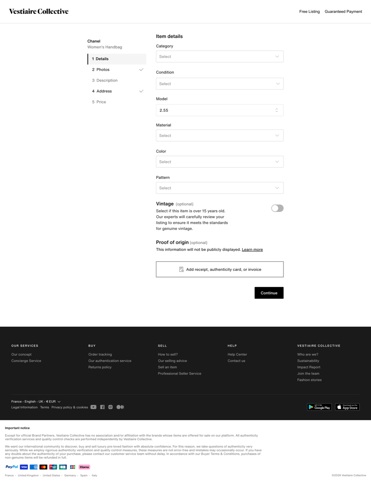
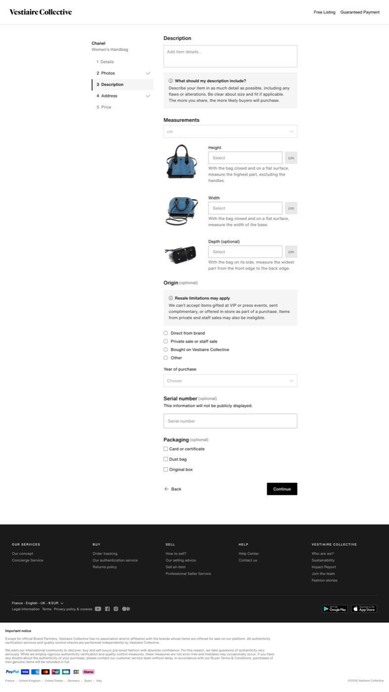
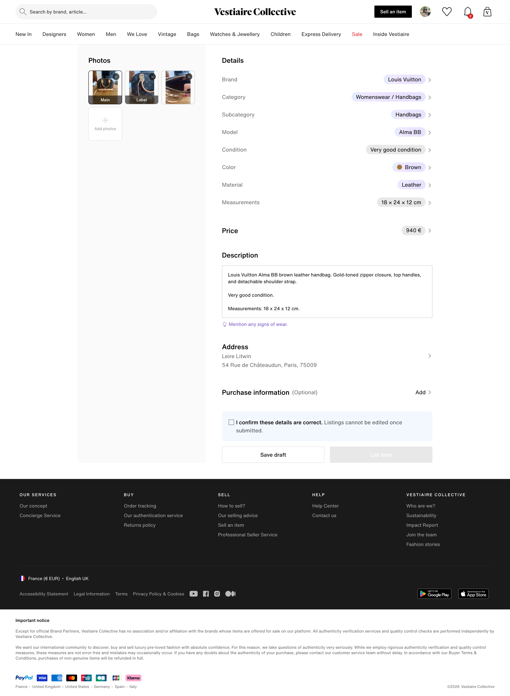
Timeline
-
2-3 months
Discovery to launch
The project moved from discovery to launch in approximately 2-3 months.
-
Progressive
Rollout
The MVP was designed for progressive rollout, first with internal and beta testers group of users, allowing the team to test the experience, gradually expose it to sellers and learn from real usage.
-
3 months
After launch
Launch was the beginning of the next learning cycle. For the following three months, we continued to monitor the experience, collect feedback and identify opportunities for improvement.
A short contextual feedback module at the end of the flow helped us gather feedback while the experience was still fresh for sellers. The post-launch work focused on fixing issues found in real usage, improving the generated description, improving accuracy of prefilled information and handling edge cases.
Impact
Impact
The project was followed through four product metrics. We decreased Time to List and increased Completion Rate and Listings per Seller, which shows the listing form became easier.
-
Lower
Median Time to List
Whether the new flow reduced the time required to create a listing.
-
Higher
Completion Rate
Whether sellers starting a listing were finishing it and publishing the item.
-
Higher
Listings per Seller
Whether the experience increased our marketplace supply.
Measured against the manual listing flow as baseline. The exact figures, and the fourth metric, are in the full version.
The design system write-up is still being put together.
Alongside product work I spend a large part of my time on the system that the rest of the product is built from. I would rather show it properly than post a thin version of it, so this section is going up once the material is ready.
- Foundations and tokens
- Components across iOS, Android and web
- Documentation
- Contribution and governance
- Adoption
In the meantime, I am happy to walk through it in a conversation.
Rebuilding the homepage around who is looking at it
The homepage was trying to serve very different users with a single experience. Instead of one page for everyone, we defined two core structures and a modular system the teams could adapt.
- Role
- Product Designer
- Platform
- iOS, Android and web
- My input
- Product designer on the squad. I worked on the structure of the page, the hierarchy between the modules and how the whole thing held together across the three platforms.
The public version leaves out the engagement data, the commercial thinking behind the sales formats, the menswear numbers and the results.
Context
Our homepage was trying to serve very different users with a single experience. For new visitors the questions were about what Vestiaire Collective is, whether it can be trusted, what kind of products and brands they would find, and whether the prices are fair.
For recurring users the need was different. They already understood Vestiaire and were looking for relevant products, inspiration and new discoveries.
At the same time the existing homepage was difficult for internal teams to evolve. Its outdated modules limited our ability to create premium merchandising experiences, showcase inspiration and drive product discovery.
What is Vestiaire Collective? Can I trust it? What can I find here, and are these prices fair?
The new visitorMore than one homepage
Rather than trying to build one homepage that works for everyone, we defined two core structures, each adapted to a main type of user.
-
New visitors: reassurance and discovery
Help users understand Vestiaire, build trust and discover the assortment.
-
Recurring users: personalisation and inspiration
Surface relevant products, brands, trends and content based on each user's behaviour.
Personalisation would then take this a step further, adapting content at user level based on brands, categories and products viewed, liked or purchased. Campaigns could modify content at module level, letting marketing and merchandising teams adapt the experience without redesigning the page.
New visitors
The new visitor homepage focused on three jobs.
- 1Understand VestiaireAn educational Hero explaining who Vestiaire is, reinforcing the luxury positioning through the brands and the assortment. The Hero was deliberately made smaller to bring more brands and discovery content into view.
- 2Discover the assortmentCategories, curated lists and brand merchandising to help new users navigate the platform rather than expecting them to know where to start.
- 3Build trustReassurance content answering the implicit question. Authentication expertise and Official Partner brands, plus community and fashion-curated editorial to show Vestiaire is a fashion community with a point of view, not simply a marketplace.
The intention was to serve this homepage for a user's first 24 hours. On web we could not target that window, so there it went to unlogged users instead.
Before and after
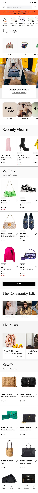
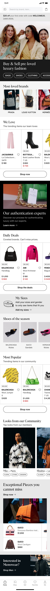
Recurring users
For returning users the homepage shifted from education to relevance. The goal was to make it feel less like a static storefront and more like a personalised entry point into Vestiaire.
The experience explored:
- Just For You
Personalised product recommendations.
- Brands For You
Extending the brands users already browse, to encourage further discovery.
- Recently Viewed
Picking a user back up where they left off.
- Matching Your Alerts
New products matching saved alerts.
- Daily Deals
Recent price drops surfaced as a reason to come back.
- Latest Arrivals
Leaning on the attractiveness of the existing New In experience.
- Curated Lists
Trends and inspiration.
- Community and user content
Surfacing fashion lovers and handpicked items.
Before and after

A flexible homepage system
The redesign was also a chance to move from a rigid set of components to a modular system that could adapt to different users, content and business moments.
Marketing and merchandising teams also needed greater flexibility to adapt the homepage for major commercial moments, with more distinct experiences for large-scale campaigns and sales events. We therefore designed a range of reusable modules and Hero formats that could be combined depending on the objective.
A more flexible content system
Alongside the Hero, a modular approach to the rest of the page: horizontal product swipers for New In, We Love and Recently Viewed; small and medium marketing modules; editorial merchandising modules with larger imagery; product-led campaign modules; category and brand discovery modules; sales and promotional modules; and personalised recommendation modules. Teams could build different homepage experiences without a new design for every campaign.
The visual system also improved the fundamentals: denser spacing, clearer hierarchy, better use of the container and more content visible above the fold. That gave internal teams more control over what content appeared, when it appeared and who it was relevant to.
How marketing promoted a moment
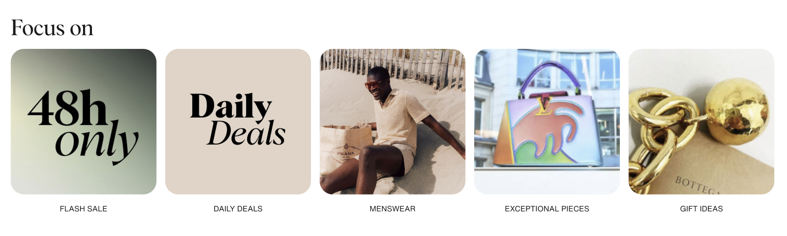
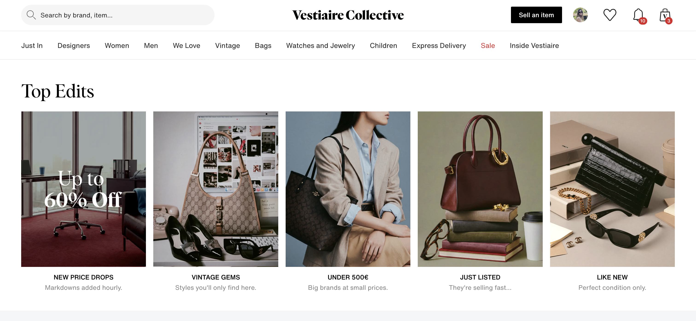
Adapting the experience for men
A large share of the people landing on the homepage were shopping menswear, while the page predominantly featured women's products. That led us to explore a dedicated men's homepage, and the ability for users to switch their primary homepage.
The concept combined menswear-specific merchandising, education and reassurance, category and brand discovery, and inspiration and curated content.
Before and after
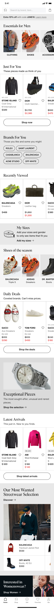
Results
What the experiments showed, what we did with the result, and where the work landed. All of it sits behind the password.
The public version leaves out the Favorites results and what the saved searches experiments showed.
Favorites
iOS, Android and webContext and opportunity
- A clear correlation between how engaged a user is and how often they like items.
- Top buyers hold 150+ items in their favorites, which needs management features.
- Favorites are an important part of the conversion journey.
- Users are most likely to buy within 7 days of liking an item.
My input
- Rapid iterations on the mockups, to fit quick development and a test launch.
- Design mockups for the different iterations on all platforms.
- Usability testing.
- Collaboration with cross functional teams on converging the design and the tech solution.
- Daily design support, discussions on tech solutions, and design QA.
- Helping prepare the Town Hall presentation.
Features
- Product tiles showing offers, See similar and Add to cart.
- Favorites added to the nav bar, with notifications moved to the top bar.
- Removing items sold more than 6 months ago.
- Filters on favorites.
- An improved empty state for users with no favorites.
Web
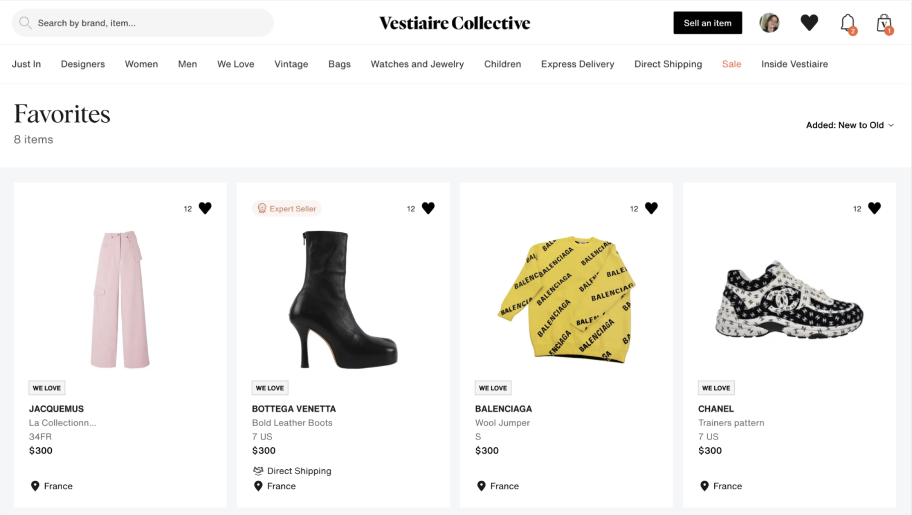
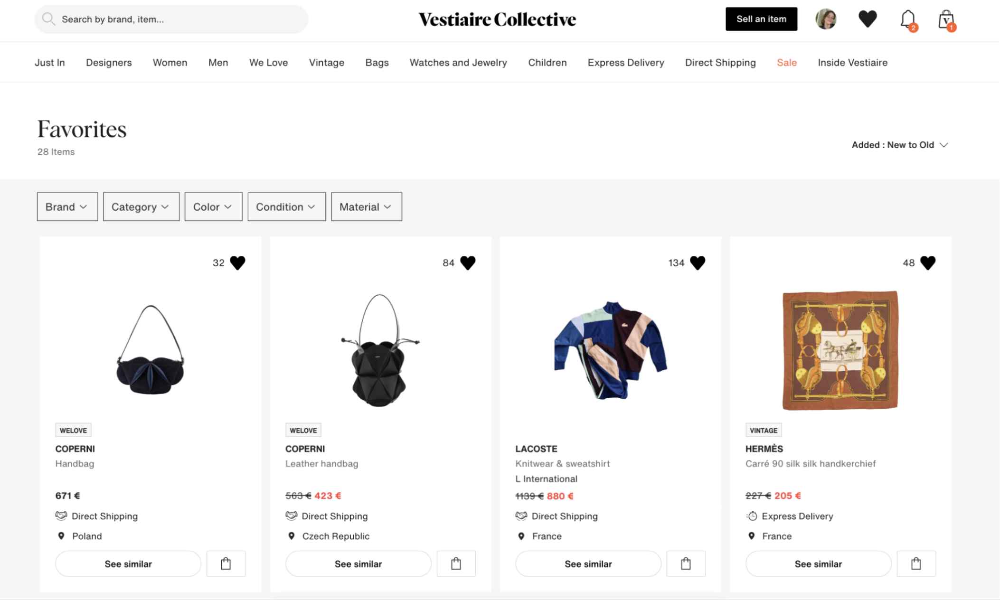
App
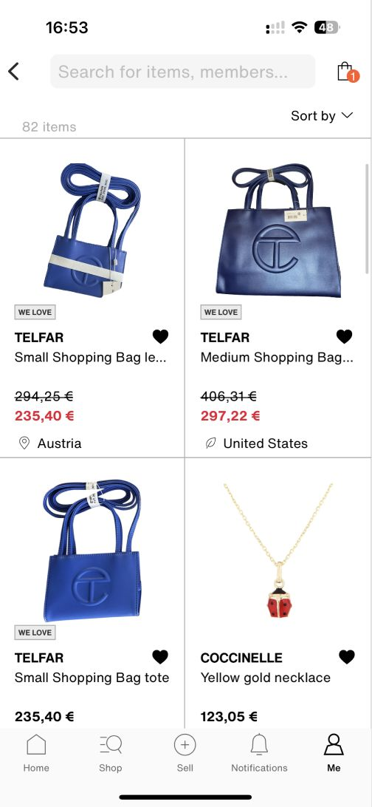
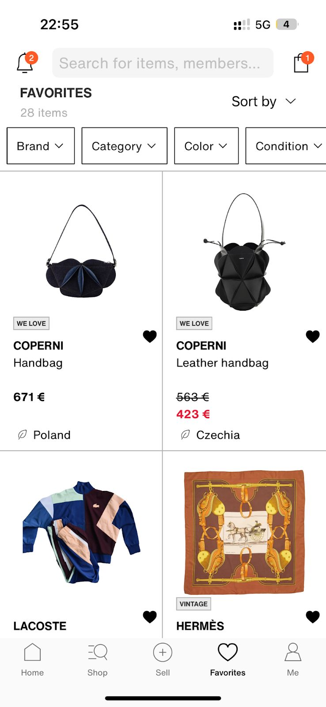
Saved searches
iOS and webContext
- Saved searches existed, but few people found them.
- The work was about visibility rather than about building something new.
My input
- Explorations on how to raise the visibility of the feature.
- Surfacing saved searches in the search bar, where it previously showed only recent searches.
- Designing the bookmark icon in the search bar, and the tooltip introducing it.
Features
- Saved searches in the search bar alongside recent searches.
- A bookmark icon in the search bar to save the current search.
- A tooltip pointing the icon out the first time.
Web
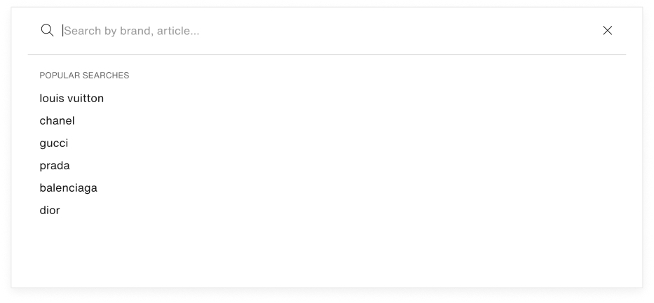
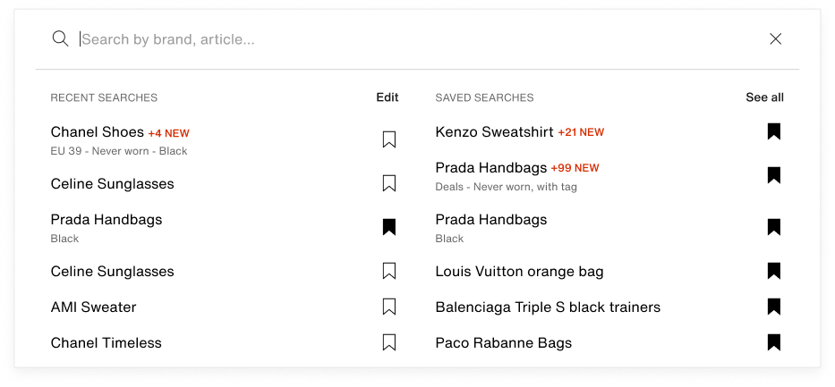
App
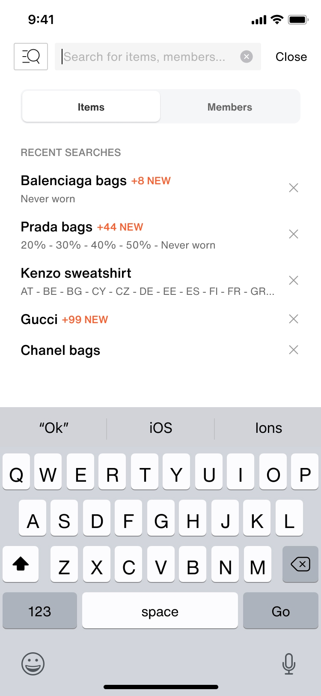
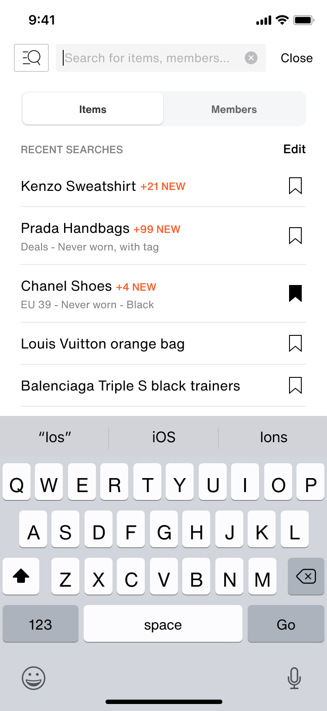
The design system
Web, iOS and AndroidContext
- I joined in 2022 with the mission of establishing the design system.
- It meant redefining the visual identity around a luxury and minimalist direction.
- A transition phase: the product was still running legacy designs alongside the new system.
Design challenges
- Defining tokens, components and patterns, and organising the library files.
- Writing the usage guidelines.
- Advocating for adoption inside the design team.
Tech challenges
- Three technologies to serve at once, across web, iOS and Android.
- The code migration was still in progress, so some pages could not take the system yet.
- Keeping updates aligned across several teams.
-
Libraries
5
Shared libraries, with shared tokens and variables in Figma.
-
Figma
600+
Components built to support the design teams.
-
Per platform
15+
Custom components built on each platform to support developers, on top of the native ones.
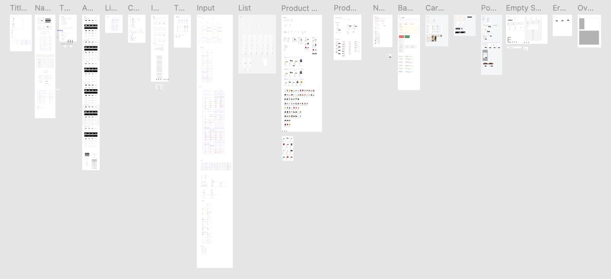
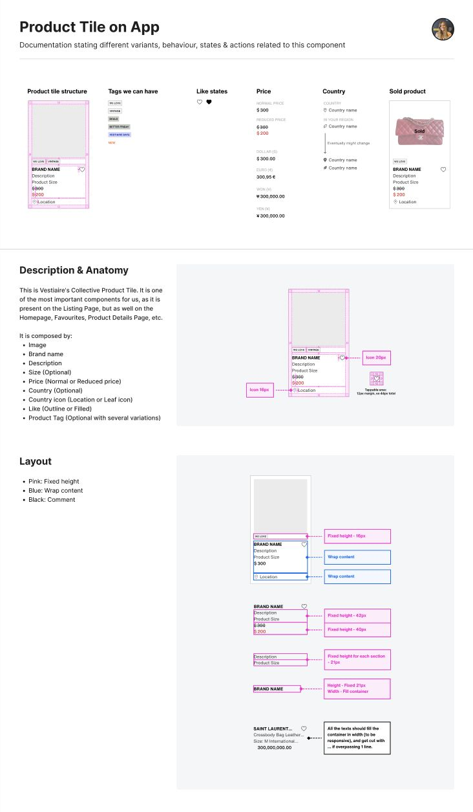
A Figma plugin for the design team
Internal toolContext
The project started from a repetitive and inefficient task in our Figma workflow: editing product tiles required manually preparing data.
My role
I used ChatGPT to help me create a custom Figma plugin, figuring out how to retrieve our product data as JSON and then match that data to the right Figma layers. I iterated through the technical challenges until the workflow was working reliably. The plugin became Vestiaire's first internally created Figma plugin, and I presented the process at a Tech Town Hall. The team can now either upload a JSON for specific products or use an integrated database of 300+ products.
Impact
Saved the design team time by automating a repetitive product-tile editing task.
Before
After